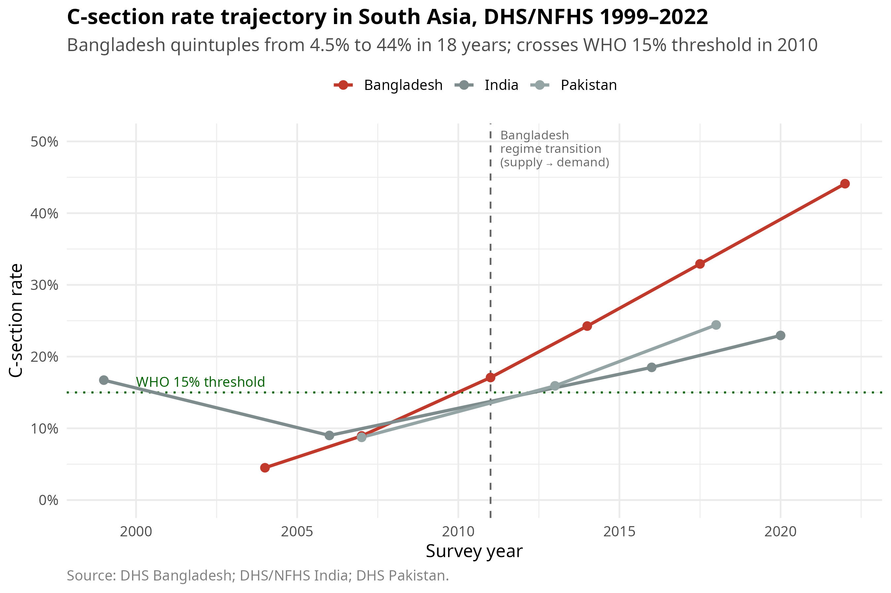

The South Asian C-Section Paradox
Identification diagnostics and the regime-shift problem in Bangladesh maternal-health data
About this book
Bangladesh’s cesarean-section rate quintupled — from 4.5% in 2004 to 44% in 2022 — crossing the WHO 15% safety threshold in 2010 and reaching the upper-30s by the early 2020s. The same Demographic and Health Survey (DHS) data tells contradictory stories about whether C-sections reduce or increase under-five mortality, depending on which wave the analyst reads.
This book documents the full causal-inference response to that paradox: a recursive bivariate probit (RBVP) estimator, three formal identification diagnostics (cross-instrument placebo, Wooldridge endogeneity test via two-stage residual inclusion, copula sensitivity), Conley plausibly-exogenous bounds, and a modern sensitivity layer (E-value, Cinelli–Hazlett sensemakr, a simplified Acerenza-Bartalotti-Kédagni testable inequalities check, and a predetermined Chow test at 2011).
The conclusion is not “C-section reduces mortality.” It is: the estimator produced a statistically significant point estimate, and the diagnostics demonstrated that the identifying assumptions on which that estimate depends are violated. The book is structured to make that distinction visible.
Three reader paths
| If you are a… | Start with | Then |
|---|---|---|
| Social scientist on observational maternal-health data | Part I (descriptive trajectory, regime shift, wealth gradient) | Part II’s modern sensitivity layer, Chapters 12–15 |
| IV econometrician / methodologist | Chapter 6 (econometric framework) | Chapters 9 and 11 (cross-instrument placebo, Conley bounds) |
| Statistician / identification theorist | Chapters 7, 8, 10 (RBVP, 2SRI, copula sensitivity) | Chapter 14 (Acerenza testable inequalities) |
How to read this book
- Each chapter is self-contained but assumes the reader has read the preface and Chapter 1.
- Heavy computational code (RBVP estimation, cluster bootstrap, copula fitting) lives in
scripts/, organized by phase: descriptive (20_descriptive/), spatial (30_spatial/), main causal (40_causal_main/), modern sensitivity (50_phase_d_modern/), and India/Pakistan appendices (99_appendix/). Chapters source these scripts but typically read their pre-computed outputs fromoutputs/for fast rendering. - All numerical claims tie back to a specific CSV in
outputs/or a specific figure infigures/. Provenance is documented in Appendix A and the methodology map. - The audit log of code-quality fixes applied during the analytical pipeline is preserved in Appendix B and Appendix C.
License and citation
This book and all derived outputs are released under the MIT License. The underlying Bangladesh DHS microdata are not redistributable; access requires registration with the DHS Program (https://dhsprogram.com) and an approved project request. See the preface for the full access workflow.
NoteSuggested citation
Hosain, M. (2026). The South Asian C-Section Paradox: Identification diagnostics and the regime-shift problem in Bangladesh maternal-health data. https://moccaram.github.io/csection-paradox-bd/
Correspondence
Mukarram Hosain · M.Sc. Data Science, Shahjalal University of Science and Technology github.com/moccaram · moccaram@gmail.com